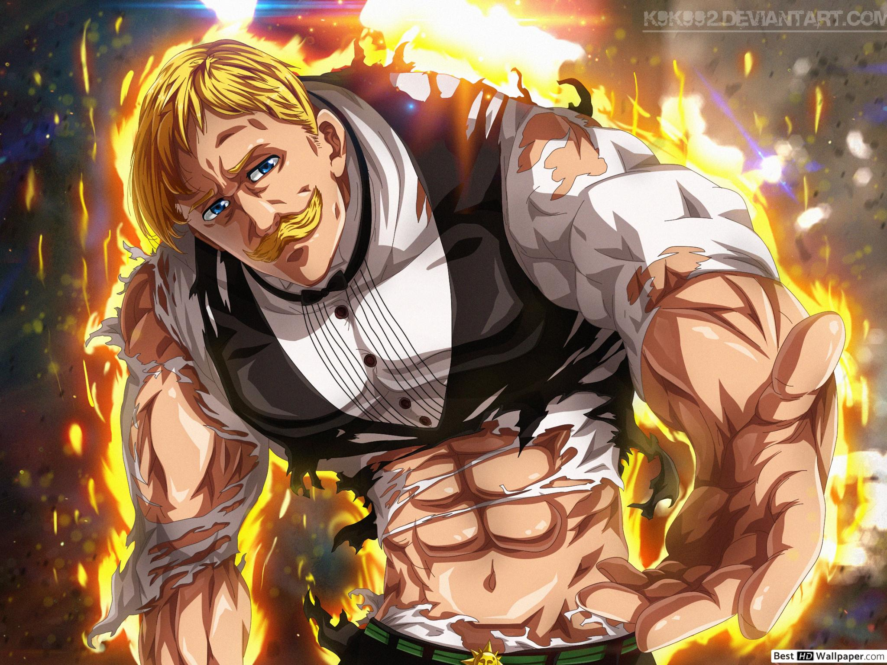
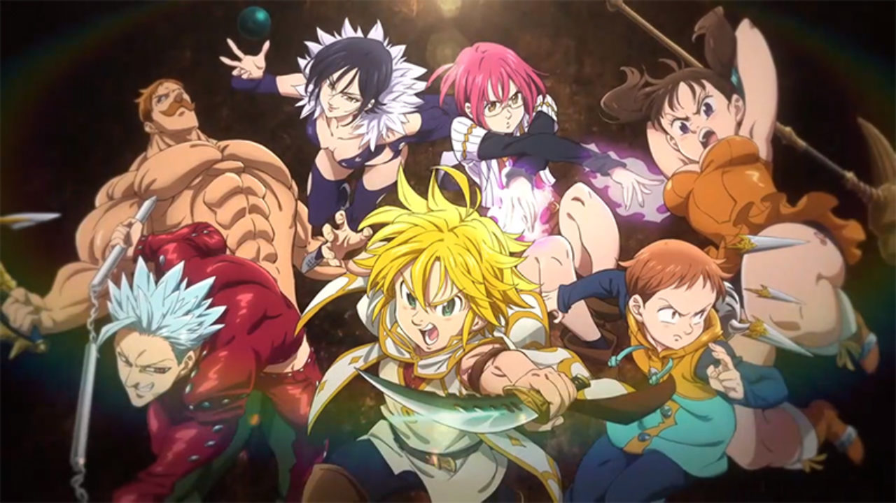
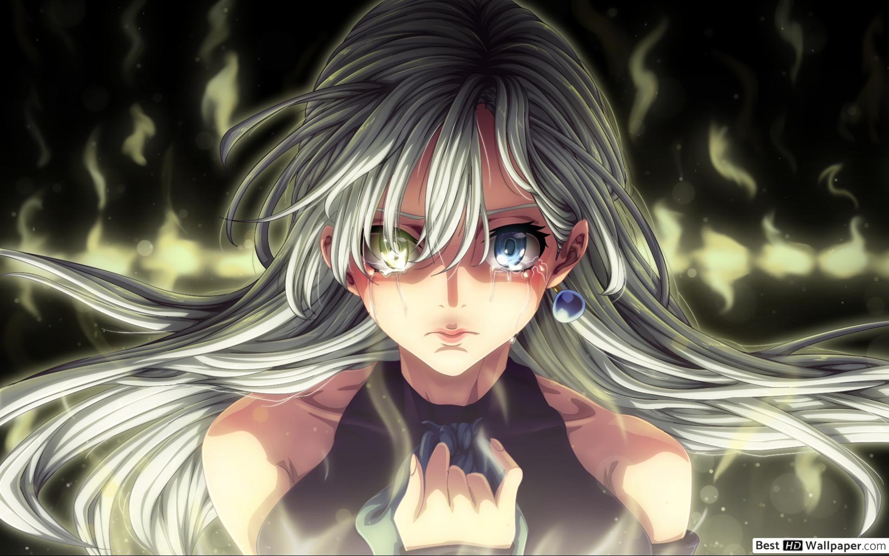

Nanatsu no taizai
Galeria zdjęć:
  

Spis treści:
+Czym jest Seven Deadly sins
Seven Deadly Sins (jap. 七つの大罪 Nanatsu no taizai) – shōnen-manga, autorstwa Nakaby Suzukiego. Ukazywała się ona w „Shūkan Shōnen Magazine”, nakładem wydawnictwa Kōdansha od października 2012 do 25 marca 2020 roku i składa się łącznie z 41 tomów.
Na jej podstawie powstało 24-odcinkowe anime, wyprodukowane przez studio A-1 Pictures i wyemitowane przez telewizję MBS.
Mangę wydaje w Polsce wydawnictwo Studio JG pod tytułem Seven Deadly Sins.
Premiera anime w polskiej wersji językowej miała miejsce 20 października 2017 roku na platformie Netflix pod tytułem The Seven Deadly Sins.
Siedem Grzechów Głównych jest legendarną grupą najgroźniejszych i najsilniejszych przestępców w całym królestwie Liones,
tworzyli oni zakon rycerski do momentu oskarżenia ich o zdradę stanu oraz zamordowanie Wielkiego Świętego Rycerza.
Po tych wydarzeniach zostali rozdzieleni na dziesięć lat. Dodatkowo każdy z nich w przeszłości popełnił jakiś grzech o którym nie chce mówić.
Na swych ciałach mają wyryte symbole siedmiu bestii. Są głównymi bohaterami serii.
Na jej podstawie powstało 24-odcinkowe anime, wyprodukowane przez studio A-1 Pictures i wyemitowane przez telewizję MBS.
Mangę wydaje w Polsce wydawnictwo Studio JG pod tytułem Seven Deadly Sins.
Premiera anime w polskiej wersji językowej miała miejsce 20 października 2017 roku na platformie Netflix pod tytułem The Seven Deadly Sins.
Siedem Grzechów Głównych jest legendarną grupą najgroźniejszych i najsilniejszych przestępców w całym królestwie Liones,
tworzyli oni zakon rycerski do momentu oskarżenia ich o zdradę stanu oraz zamordowanie Wielkiego Świętego Rycerza.
Po tych wydarzeniach zostali rozdzieleni na dziesięć lat. Dodatkowo każdy z nich w przeszłości popełnił jakiś grzech o którym nie chce mówić.
Na swych ciałach mają wyryte symbole siedmiu bestii. Są głównymi bohaterami serii.
Powrót na górę strony
Fabuła
Siedem Grzechów Głównych było zakonem rycerskim posyłanym na najcięższe misje,
w jego skład wchodzili najsilniejsi ludzie z królestwa, podlegali bezpośrednio królowi i mieli jego zaufanie,
jednak dziesięć lat temu zostali oskarżeni o zdradę i zabójstwo Wielkiego Świętego Rycerza Zaratrasa.
Wiemy jednak, że prawda wyglądał zupełnie inaczej, a cały fortel miał służyć pozbycia się Siedmiu Śmiertelnych Grzechów przez Hendricksona oraz Dreyfusa.
Meliodas nie wiedział co się tak na prawdę wydarzyło tamtego dnia, pamiętał tylko słowa "Wybacz kapitanie" wypowiedziane przez jednego z towarzyszy.
Grzechy zostały rozdzielone na dziesięć lat, zaczęto uważać, że wszyscy członkowie tej grupy już dawno zostali zabici przez Świętych Rycerzy.
Po dziesięciu latach ponownie łączy członków tego zakonu księżniczka Elizabeth, która wyrusza na poszukiwania tej grupy i znajduje ich kapitana Meliodasa.
Potem dołączają do nich kolejno Diane, Ban, King oraz Gowther, podczas walki w królestwie spotykają również Merlin,
która prosiła kapitana o wybaczenie dziesięć lat wcześniej, do tej pory jednak tamte wydarzenia pozostają nie do końca jasne.
w jego skład wchodzili najsilniejsi ludzie z królestwa, podlegali bezpośrednio królowi i mieli jego zaufanie,
jednak dziesięć lat temu zostali oskarżeni o zdradę i zabójstwo Wielkiego Świętego Rycerza Zaratrasa.
Wiemy jednak, że prawda wyglądał zupełnie inaczej, a cały fortel miał służyć pozbycia się Siedmiu Śmiertelnych Grzechów przez Hendricksona oraz Dreyfusa.
Meliodas nie wiedział co się tak na prawdę wydarzyło tamtego dnia, pamiętał tylko słowa "Wybacz kapitanie" wypowiedziane przez jednego z towarzyszy.
Grzechy zostały rozdzielone na dziesięć lat, zaczęto uważać, że wszyscy członkowie tej grupy już dawno zostali zabici przez Świętych Rycerzy.
Po dziesięciu latach ponownie łączy członków tego zakonu księżniczka Elizabeth, która wyrusza na poszukiwania tej grupy i znajduje ich kapitana Meliodasa.
Potem dołączają do nich kolejno Diane, Ban, King oraz Gowther, podczas walki w królestwie spotykają również Merlin,
która prosiła kapitana o wybaczenie dziesięć lat wcześniej, do tej pory jednak tamte wydarzenia pozostają nie do końca jasne.
Powrót na górę strony
Moje ulubione postaci:
- Meliodas (メリオダス) jest kapitanem Siedmiu Grzechów Głównych oraz Grzechem Gniewu, którego symbolem jest Smok.
Jest właścicielem baru "Pod Kapeluszem Dzika ", a także głównym protagonistą serii.
Jego Świętym Skarbem jest Demoniczny Miecz, Lostvayne, którego używa w połączeniu ze swoją mocą, Całkowitą Kontrą.
Był także przywódcą Dziesięciu Przykazań jako Meliodas, Miłość (慈愛のメリオダス, Jiai no Meriodasu),
a także członkiem Stigmy. Jest starszym bratem Zeldrisa i najstarszym synem Króla Demonów. - Ban jest członkiem Siedmiu Śmiertelnych Grzechów i Grzechem Chciwości, którego symbolem jest Lis.
Po rozpadzie grupy, początkowo nie wiadomo gdzie się podziewał,
jednak po pięciu latach został schwytany i uwięziony w Lochu Baste jako przynęta na Meliodasa.
W momencie gdy dowiedział się, że jego przyjaciel Meliodas wciąż żyje postanowił przyłączyć się do swojego kapitana,
by razem z nim wyruszyć w podróż i odszukać resztę Grzechów. - Escanor (エスカノール; Esukanōru) jest członkiem Siedmiu Śmiertelnych Grzechów, noszącym tytuł Grzechu Pychy, którego symbolem jest Lew.
W przeszłości, był także Świętym Rycerzem rangi Diamentowej.
Escanor wydaje się posiadać rozszczepioną osobowość w zależności od pory dnia.
Nocą, Escanor jest nieśmiały, skromny i wygląda słabo.
Przeprasza niemal za wszystko, myśląc że stwarza kłopoty pozostałym członkom drużyny, jednak jest także wystarczająco zmotywowany by dawać z siebie wszystko.
Im bliżej do wschodu słońca, tym bardziej osobowość Escanora się zmienia:
staje się bardziej dumny, otwarty a nawet arogancki
(rozkazał Królowi Wampirów by ten przeprosił go, za to że urodził się w jego świecie).
Powrót na górę strony
2020 © Jakub Żuk 2tb - Wszelkie prawa zastrzeżone